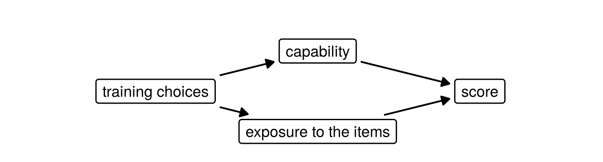
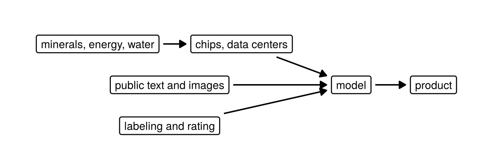

Ethics of AI
Important note: this week is about what claims about AI rest on, what AI systems are made of, and who receives the gains from them. The derivations below are not contested. What is owed to the people whose writing and labor are in a model, who should receive the gains, and what a person who signs AI-assisted work owes a reader are contested, and my view is one view. A well-argued position I think is wrong can still get full marks.
Summary
Claims about what AI can do have come with tests since the field began, and the tests have often measured something narrower than the claim. A language model can be thought of as one more level of abstraction in programming: the person writes less and the machine fills in more, and the computer is still executing instructions that someone gave. Unlike a compiler, a model’s behavior is learned and sampled, so it has to be measured.
Measurement is where the statistics of this week are. A benchmark score is not the capability the benchmark is named for. A gap between scores on old and new test items can be compared with its standard error, and then needs a causal explanation. A reported interval can be far too narrow when every item shares the same prompt, judge and settings, and more items make that worse. A published score that was chosen as the best of several private versions overstates, by an amount that depends on the noise in one version’s score and on how many versions were tried.
A model is also made of things: minerals and energy, public writing and images, and the paid work of labeling and rating. The same data can support a requester’s average rate above $11 an hour and a median worker’s earnings of about $2, because an average answers a question about the units it is taken over. So far the measured payoff from AI is concentrated in a few firms. Who paid for it, who should receive it, and what the person who signs AI-assisted work owes a reader are the ethical questions, and the last one is yours to answer.
Warm-up
The preparation asked for your top questions about the ethics of AI. Write one down, and beside it the evidence that would help answer it.
The lecture takes four kinds of question: what a claim about a model’s ability rests on, how sure a reported score is, what a model is made of, and who receives the gains. Questions about learning and reliance, about chatbots and their users, and about energy are covered in the reading.
Part 1: Where AI came from
A test in place of a question
Turing (1950) opens his paper with the sentence “I propose to consider the question, ‘Can machines think?’” and at once sets the question aside as too vague to answer. He replaces it with a test he can describe. In the version usually told, a questioner exchanges typed messages with a person and with a machine, and has to say which is which. He calls it the imitation game. From the start, then, a claim about machines came with a test standing in for it, and whether the test measures the claim was left open.
In 1955 McCarthy, Minsky, Rochester and Shannon proposed “a 2 month, 10 man study” of artificial intelligence, to be held at Dartmouth College in the summer of 1956. The proposal gave the field its name. Its authors thought that a selected group of scientists could make a significant advance on one or more of the field’s problems in a summer.
ELIZA (Weizenbaum, 1966) was a program that answered typed sentences. It looked for a keyword in the sentence, took the sentence apart by a rule attached to that keyword, and put a reply together by another rule. The rules were a script that a person wrote. Weizenbaum’s introduction says that once a program’s inner workings are explained, “its magic crumbles away”.
In 1973 Lighthill reviewed the field for the UK’s Science Research Council, which was receiving more applications for research support in AI. He set results against claims and concluded that in no part of the field had discoveries “produced the major impact that was then promised”.
Rules fitted to data
In the programs above, people wrote the rules. The systems now called AI get their rules another way. In 2012 a neural network trained on labeled images won the ImageNet competition, with a top-5 error of 15.3% against 26.2% for the next entry (Krizhevsky, Sutskever and Hinton, 2012). In 2017 Vaswani and coauthors introduced the transformer, “a new simple network architecture” for sequences such as text. On 30 November 2022 OpenAI released ChatGPT as a free research preview.
A language model is trained to predict the next word in text that people wrote. A chatbot is then tuned further using people’s rankings of its answers; OpenAI’s announcement describes trainers ranking alternative responses. The rules are no longer written by a person. They are fitted to data that people produced, which is where the later parts of these notes go.
Levels of abstraction
| level | the person writes | the rest is filled in by |
|---|---|---|
| machine code | every instruction, as numbers | nothing |
| assembly | every instruction, by name | an assembler |
| a compiled language (Fortran, 1957) | formulas and loops | a compiler |
| libraries and scripting | calls to other people’s code | an interpreter and the libraries |
| a request in English | what is wanted | a language model |
One way to think about a language model is as the next row of this table. At each level the person writes less and the machine fills in more. Each new level was also described, when it arrived, as the machine doing the programming: the paper that presented the first Fortran compiler is titled “The FORTRAN automatic coding system” (Backus et al., 1957). At every level the computer is executing instructions.
That includes what are called agents. An agent is a program that runs a model in a loop: the model proposes a step, the program runs it and returns the result to the model, and this repeats until a stopping rule. Someone wrote the request, started the loop and decided what it was allowed to touch. Someone gave the instructions, and someone answers for them. This is a small idea, and I use it as an anchor: it returns at the end, when a report has to be signed.
The comparison stops in one place. A compiler’s translation is specified and repeatable: the same program gives the same result, and the language’s definition says what the result should be. A model’s translation of a request is learned from data and sampled, so the same request can give different results and no definition says which is right. What a model does therefore has to be measured.
Part 2: What a benchmark measures
Score and capability
Suppose model A scores higher than model B on a benchmark named for reasoning. Before believing that A reasons better than B, there is a lot to ask: what the items are and who wrote them, whether either model has seen them, how answers are scored, how many items there are, and how large the difference is.
Write \(Y\) for the score, the share of items a model answers correctly, and \(Y^*\) for the capability the benchmark is named for. Claims are about \(Y^*\). Data are about \(Y\).
Bean et al. (2025) reviewed 445 benchmarks for language models and coded what each paper reports. Of the 445, 78.2% define the phenomenon they measure, and 47.8% of those definitions are contested. 53.4% give evidence that the score measures the intended construct, 32.4% compare models with a human baseline, and 16.0% use uncertainty estimates or statistical tests. Two cautions come with these counts. A benchmark that reports no justification has not been shown to be invalid. And the coding is itself a measurement with error: on whether the phenomenon was defined, the papers that were coded twice got the same answer 53.7% of the time, little better than chance (Brennan–Prediger kappa 0.073).
New items
A benchmark of grade-school mathematics problems, GSM8K, is public. Zhang et al. (2024) had 1,205 new problems written by the same recipe. People solved the new problems at about the same rate as the old ones. One model scored 8 points lower on the new problems than on the old.
The gap between two scores
The first thing to rule out is chance. With \(n_1\) old items and share correct \(\hat p_1\), and \(n_2\) new items and share correct \(\hat p_2\), the gap is a difference of two proportions: \[ \hat p_1 - \hat p_2, \qquad \text{standard error} \;\; \sqrt{\frac{\hat p_1 (1 - \hat p_1)}{n_1} + \frac{\hat p_2 (1 - \hat p_2)}{n_2}} . \] This treats the items as independent draws and the two sets as separate samples. As an illustration, with accuracy near 0.8 and 1,200 items in each set, the standard error is \(\sqrt{2 \times 0.8 \times 0.2 / 1200} = 0.016\), or 1.6 points. A gap of 8 points is about 5 standard errors. A gap of 2 points is about 1, and would not be evidence of a difference. (The sizes are chosen for the arithmetic; the new set has 1,205 problems.)
One more caution about chance. The 8 points is the largest gap among the models the authors tested, and the largest of many noisy gaps is larger than a typical one. The next part computes by how much.
A gap that is not chance needs an explanation, and there are at least two. The new problems could be harder in some way the recipe did not control. Or the model could have been exposed to the old problems, or to problems like them, in training. The explanations predict different things. If the new problems were harder, people and every model should find them harder. People did not, and the frontier models showed little to no gap. If exposure is the cause, the gap should be larger for models that show more signs of exposure, and the authors report that it is larger for models that more readily reproduce the old problems. They also weigh indirect routes to the same result: developers collecting data similar to the benchmark, or choosing among versions of a model by its benchmark score. The authors work at a company that sells training data.
Conditioning or intervening
“A scores higher than B” compares two models as they are. The two differ in everything upstream of the score: their training data, how much of the benchmark that data contained, and how the published version was chosen. That is a comparison by conditioning, and the score difference mixes the path through capability with the path through exposure. The new-items study is closer to an intervention. It changes the test and holds the model fixed, which closes the path through exposure to those particular items.
Part 3: How sure, and which score
A larger benchmark
A benchmark reports a model’s score with a 95% interval, from the usual formula for a mean over \(n\) items. Each answer is graded by another model, with one prompt, one judge and one run. The benchmark then grows from 25 items to 400, and the interval becomes four times narrower.
The best of \(K\)
Singh et al. (2025) audited Chatbot Arena, a public leaderboard that ranks chatbots by people’s votes between pairs of anonymous answers. A provider could test private versions of a model on the arena and publish one of them: Meta tested 27 in the month before one release. The authors also entered two copies of the same model as two separate models. The copies scored 1052 and 1069, and four other models were ranked between them. Several of the authors work at Cohere, which competes on the leaderboard.
An earlier part of the course found the distribution of the largest of \(n\) independent draws. It applies here. Suppose a provider tests \(K\) private versions that are in truth equally good, so that version \(k\) scores \(\mu + \sigma Z_k\) with \(Z_1, \dots, Z_K\) independent standard normals, and publishes the best score. Then \[ E\Big[\max_k \,(\mu + \sigma Z_k)\Big] = \mu + \sigma\, m_K , \] where \(m_K\) is the expected largest of \(K\) standard normals.
| \(K\) | 2 | 10 | 27 | 50 |
|---|---|---|---|---|
| \(m_K\) | 0.56 | 1.54 | 2.00 | 2.25 |
For \(K = 2\) the value is exactly \(1/\sqrt\pi\). With 27 equally good versions, the published score is on average two standard errors above the truth, where the standard error is that of one version’s score.
The overstatement depends on \(\sigma\) and on \(K\), and it does not last. The best of \(K\) was partly lucky, and the luck is not in votes cast later. If the published score were an average over votes, with \(n_0\) votes from the selection period and \(n_1\) fresh ones, the expected overstatement would be \(\sigma\, m_K \cdot n_0 / (n_0 + n_1)\): with three fresh votes for each old one, a quarter of it remains. A leaderboard’s rating is not a plain average, so this is a guide to the direction and not to the size. The arena’s operators, replying to the paper, put the gain at “around +11 Elo after 50 tests and 3000 votes” and say that it falls to zero as fresh votes accumulate (Arena Team, 2025).
If the versions do differ, part of the best version’s lead is real. The formula is for the case in which none of it is, and it shows that a lead of the size \(\sigma\, m_K\) is what selection alone produces.
Part 4: What it is made of
The supply chain

Earlier in the course: creating data takes resources, and someone pays to count, to record, and to keep. A model has a supply chain in the same sense. Crawford and Joler (2018) drew one for a single voice assistant, from mines to data centers to human labor, and Crawford’s book Atlas of AI (2021) follows the same chain at length. Gray and Suri (2019) call the human work hidden behind automated services ghost work.
Early in the course we asked, of a choice nobody saw, who benefited from it being invisible. The same question applies to this chain. The rest of this part follows two of its boxes, public text and paid labeling. Energy and water are in the reading.
Text as a commons
A model is trained on writing that people made public: forum answers, encyclopedia articles, code, news. Each piece is small, and the collection is the resource. I take the question of what is owed for this as an ethical question. What the law says is a separate question, and it is not the subject here.
There are two frames. In the collective frame, the starting point is that one person’s data reveal information about other people. Acemoglu et al. (2022) build a formal model on that fact and find that people share too much and are paid too little for it, because each person’s decision ignores what it reveals about others. Viljoen (2021) argues that individual consent cannot protect interests of this kind. What a model learns from one forum answer depends on the thousands of other answers around it, so on this view the question is what a group of contributors is owed, and who can speak for the group. In the individual frame, the question is each author’s consent, credit or payment for their own text. The collective frame is the one these notes spend more time on.
Stack Overflow after ChatGPT
Stack Overflow is the main public question-and-answer site for programmers. del Rio-Chanona, Laurentsyeva and Wachs (2024) compared posting there before and after ChatGPT’s release with posting on Russian- and Chinese-language programming forums, where ChatGPT was harder to reach, and on mathematics forums, where it was less capable. Six months after the release, posting on Stack Overflow was about 25% lower than the comparison sites predict.
The comparison forums
The estimate is a difference-in-differences: the change on Stack Overflow minus the change on the comparison forums. It is the effect of ChatGPT under two conditions. Without ChatGPT, posting on Stack Overflow would have changed as it did on the comparison forums. And the comparison forums were not themselves affected by ChatGPT.
Neither can be checked directly, since nobody observes Stack Overflow without ChatGPT. The second condition fails in a known direction. Some users of the comparison forums could reach ChatGPT anyway, and if their posting fell too, the comparison understates the effect. The authors treat 25% as a lower bound for that reason.
The authors describe Stack Overflow as a public good whose content partly feeds privately owned models that substitute for it. Not every commons shows the same pattern. Wikipedia’s views and edits did not fall in aggregate (Reeves, Yin and Simperl, 2025), though newly created, popular articles whose content overlaps with ChatGPT lost views (Lyu et al., 2025).
Owed, and to whom
The class this week argues one question: a model was trained on writing that people made public; is anything owed for it, and to whom?
The two frames ask for different things. The individual frame asks, author by author, for consent, credit, payment, or a way to opt out. The collective frame asks, for the group, for support for the sites that hold the writing, a say in how the collection is used, or a share of what is made from it. Come to class able to argue either.
Pay for labeling
Sama, an outsourcing firm in Kenya, labeled graphic text for OpenAI. Three findings about that work each compare the labelers’ pay with something different.
OpenAI’s contracts paid Sama $12.50 an hour per worker, and the labelers took home $1.32 to $1.44 an hour; Sama disputed the figures (Perrigo, 2023). The comparison is with the client’s rate. In a randomized evaluation run with Sama, training combined with a job referral raised applicants’ earnings by about 37 to 40%, relative to applicants who were not offered them (Atkin, Schoar and Wahnschafft, 2021). The comparison is with what the same kind of applicant would otherwise earn. Fieldwork at three Sama centers in Kenya and Uganda found low wages, insecure work and tightly disciplined management (Muldoon et al., 2025). The comparison is with a standard for decent work.
All three can be true at once. Which comparison answers “is it fair?” is not a statistical question, and you should be able to say which you would use and why.
Requesters and workers
Amazon Mechanical Turk is a platform for small paid online tasks, such as labeling data. Requesters post the tasks and workers do them. Hara et al. (2018) analyzed the logs of 2,676 workers, covering 3.8 million tasks. The average requester pays more than $11 an hour. The median worker earns about $2 an hour.
Requesters or hours of work
Take invented numbers. Nine requesters pay $12 an hour and post 1 hour of work each. One requester pays $1 an hour and posts 91 hours. \[ \begin{aligned} \text{average over requesters:} \quad & \frac{9 \times 12 + 1 \times 1}{10} = 10.90 \\[4pt] \text{average over hours of work:} \quad & \frac{9 \times 12 + 91 \times 1}{100} = 1.99 \end{aligned} \] Both are averages of the same ten hourly rates, with different weights: each requester counted once, or each requester counted by the hours of work posted. Hara et al. report the same structure in the real data: “lower-paying requesters post much more work”. A worker’s hour also includes time that no requester pays for, such as searching for tasks, and work that is then rejected. And the two published numbers differ in a third way, since one is a mean and the other a median.
An average answers a question about the units it is taken over. “What do requesters pay?” and “What do workers earn?” are different questions, and a report that gives only the first has chosen whose experience to describe.
Part 5: Who gets the payoff
Payoff outside the tech sector
Slok (2026), the chief economist of the asset manager Apollo, published a short note titled “No Signs of AI Payoff Outside the Tech Sector”. Its claim is that revenue per worker and profit margins are rising for the seven large technology firms known as the “Magnificent 7” and are flat for the other 493 firms in the S&P 500. It is a note with charts and not a study.
A survey points the same way. Yotzov et al. (2026) surveyed nearly 9,000 executives in seven countries in the summer of 2026. 78% of firms use AI, and 2% of firms account for over half of the spending on it. Executives report essentially no net effect of AI on employment at their firms over the past three years. They report that it added 0.2% a year to labor productivity growth over those years, and they expect 0.6% a year over the next three. These are executives’ reports about their own firms, in a working paper that has not been peer reviewed.
Whether AI speeds up a given task is an empirical question, and the reading covers it. The ethical question in this part is a different one: if there is a gain, who receives it?
Revenue per worker
Revenue per worker is a ratio, \(R / L\). It can rise because revenue rises with the same workers, or because the same revenue is made with fewer workers. The two are different events for the people involved. In either case the gain can go to customers, who pay less, to workers through pay, or to owners through profit, and revenue per worker alone does not say which. To tell, you would look at what happened to headcount, to wages, to what customers pay and to margins.
One firm and an open market
Brynjolfsson, Li and Raymond (2025) studied a firm that introduced an AI assistant in stages to 5,172 customer-support agents. Issues resolved per hour rose 15% on average and about 30% for less experienced agents, and the most skilled agents gained little. The assistant appears to spread the practices of the firm’s best agents, and the authors ask whether workers should be compensated for the data that train such systems. They could not observe wages, so the study does not say who received the gain.
On an open platform the picture differs. Hui, Reshef and Zhou (2024) found that writing freelancers had fewer jobs and lower earnings after ChatGPT’s release than freelancers in less exposed work.
Who paid, who gains
Put the last two parts together. If the payoff stays where it is now, in a few firms, who paid for it? If it spreads, who receives it, and do the people who wrote the text and labeled the data receive any of it? The data do not settle this yet, and the question is easier to ask with the supply chain in view.
A report with a signature
A report with errors
In 2025 Deloitte Australia delivered a 237-page report to Australia’s Department of Employment and Workplace Relations, for A$440,000. The report contained a fabricated quotation from a federal court judgment and references to research that does not exist. Deloitte agreed to repay the final installment of its fee, and the revised report disclosed that a language model had been used in writing it (McGuirk, 2025; Dhanji, 2025).
Return to the levels of abstraction in Part 1. The tool executed instructions. People wrote the request, accepted the output and put the firm’s name on it. The reading describes the opposite risk as well: blame can fall on the person nearest to an automated system even when that person had little control over it, which Elish (2019) calls a moral crumple zone. Who had control, and who signed, are both part of the answer.
You sign the report
You are an analyst. A tool chose the data cleaning steps and the model for an analysis, and wrote the first draft of the report. Your name goes on it. What do you owe the reader before you sign? Write down what you would check, what you would disclose, and why. There is no model answer to this one in these notes.
Lenses
The six lenses, by name:
- Goal selection. What are we optimizing or predicting?
- Data selection. Who is in the data?
- Honest reporting. Which comparison gets reported?
- Justice. Who bears the error?
- Ownership. You have to choose, so choose, and defend it.
- Leverage. What can be changed, and how?
Each ends with the same two words: and why? The six apply to this week’s material.
Goal selection. What are we optimizing or predicting? A benchmark is named for a capability and measures a score on its items. A published score chosen as the best of \(K\) has itself been optimized.
Data selection. Who is in the data? Old test items and new ones are different samples, and a model may have been exposed to one of them. Whose writing and whose labeling are in a model is a question about who is in the data.
Honest reporting. Which comparison gets reported? The naive interval, or one that counts the shared error. The best of \(K\), or a fresh score. The requester’s average, or the worker’s.
Justice. Who bears the error? Labelers paid a small fraction of the client’s rate, freelancers who lost work, and contributors to a commons that a model substitutes for.
Ownership. You have to choose, so choose, and defend it. You sign the report, and what you check and disclose before signing is your choice to defend.
Leverage. What can be changed, and how? More items leave \(\tau^2\) alone, and more prompts and judges reduce it. Fresh votes remove the luck in a selected score. Someone has to be able to ask on behalf of a commons.
Readings
Required
- AI: a survey of the evidence, the first part, “Reading” (about 2,800 words). The second part, “Supplemental”, has more studies on the same topics, for reference.
Optional
- Crawford and Joler (2018), Anatomy of an AI System: The Amazon Echo as an anatomical map of human labor, data and planetary resources, AI Now Institute and Share Lab. A map and an essay.
- Messing (2026), Hidden error in LLM pipelines leads to benchmark hacking and undercoverage, 17 November 2026. A short account of the preprint cited below.
Cited in the text and not assigned
- Acemoglu, Makhdoumi, Malekian, et al. (2022), “Too much data: Prices and inefficiencies in data markets,” American Economic Journal: Microeconomics 14(4), 218–256, https://doi.org/10.1257/mic.20200200.
- Arena Team (2025), “Our Response to ‘The Leaderboard Illusion’ Writeup,” 9 May 2025, updated 13 June 2025, https://arena.ai/blog/our-response.
- Atkin, Schoar and Wahnschafft (2021), Evaluating Sama’s training and job programs in Nairobi, Kenya, research report, J-PAL, https://www.povertyactionlab.org/media/file-research-paper/evaluating-samas-training-and-job-programs-nairobi-kenya.
- Backus, Beeber, Best, et al. (1957), “The FORTRAN automatic coding system,” Proceedings of the Western Joint Computer Conference, 188–198.
- Bean, Kearns, Romanou, et al. (2025), “Measuring what matters: Construct validity in large language model benchmarks,” NeurIPS 2025 Datasets and Benchmarks Track, https://arxiv.org/abs/2511.04703.
- Brynjolfsson, Li and Raymond (2025), “Generative AI at work,” Quarterly Journal of Economics 140(2), 889–942, https://doi.org/10.1093/qje/qjae044.
- Crawford (2021), Atlas of AI: Power, Politics, and the Planetary Costs of Artificial Intelligence, Yale University Press.
- del Rio-Chanona, Laurentsyeva and Wachs (2024), “Large language models reduce public knowledge sharing on online Q&A platforms,” PNAS Nexus 3(9), pgae400, https://doi.org/10.1093/pnasnexus/pgae400.
- Dhanji (2025), “Deloitte to pay money back to Albanese government after using AI in $440,000 report,” The Guardian, 6 October 2025.
- Elish (2019), “Moral crumple zones: Cautionary tales in human-robot interaction,” Engaging Science, Technology, and Society 5, 40–60, https://doi.org/10.17351/ests2019.260.
- Gray and Suri (2019), Ghost Work: How to Stop Silicon Valley from Building a New Global Underclass, Houghton Mifflin Harcourt.
- Hara, Adams, Milland, et al. (2018), “A data-driven analysis of workers’ earnings on Amazon Mechanical Turk,” Proceedings of the 2018 CHI Conference on Human Factors in Computing Systems, paper 449, https://doi.org/10.1145/3173574.3174023.
- Hui, Reshef and Zhou (2024), “The short-term effects of generative artificial intelligence on employment: Evidence from an online labor market,” Organization Science 35(6), 1977–1989, https://doi.org/10.1287/orsc.2023.18441.
- Krizhevsky, Sutskever and Hinton (2012), “ImageNet Classification with Deep Convolutional Neural Networks,” Advances in Neural Information Processing Systems 25, 1097–1105.
- Lighthill (1973), “Artificial Intelligence: A General Survey,” in Artificial Intelligence: a paper symposium, Science Research Council, https://www.aiai.ed.ac.uk/events/lighthill1973/lighthill.pdf.
- Lyu, Siderius, Li, et al. (2025), “Wikipedia contributions in the wake of ChatGPT,” Companion Proceedings of the ACM Web Conference 2025, https://doi.org/10.1145/3701716.3715543.
- McCarthy, Minsky, Rochester and Shannon (1955), “A Proposal for the Dartmouth Summer Research Project on Artificial Intelligence,” 31 August 1955; reprinted in AI Magazine 27(4), 2006, 12–14, https://doi.org/10.1609/aimag.v27i4.1904.
- McGuirk (2025), “Deloitte to partially refund Australian government for report with apparent AI-generated errors,” Associated Press, 7 October 2025, https://www.bnnbloomberg.ca/business/artificial-intelligence/2025/10/07/deloitte-to-partially-refund-australian-government-for-report-with-apparent-ai-generated-errors/.
- Messing (2026), “Hidden Measurement Error in LLM Pipelines Distorts Annotation, Evaluation, and Benchmarking,” preprint, https://arxiv.org/abs/2604.11581.
- Muldoon, Cant, Graham, et al. (2025), “The poverty of ethical AI: Impact sourcing and AI supply chains,” AI & Society 40(2), 529–543, https://doi.org/10.1007/s00146-023-01824-9.
- OpenAI (2022), “Introducing ChatGPT,” 30 November 2022, https://openai.com/blog/chatgpt.
- Perrigo (2023), “Exclusive: OpenAI used Kenyan workers on less than $2 per hour to make ChatGPT less toxic,” TIME, 18 January 2023, https://time.com/6247678/openai-chatgpt-kenya-workers/.
- Reeves, Yin and Simperl (2025), “Exploring the impact of ChatGPT on Wikipedia engagement,” Collective Intelligence, https://doi.org/10.1177/26339137251372599.
- Singh, Nan, Wang, et al. (2025), “The leaderboard illusion,” NeurIPS 2025, https://arxiv.org/abs/2504.20879.
- Slok (2026), “No Signs of AI Payoff Outside the Tech Sector,” The Daily Spark, Apollo, 24 October 2026, https://www.apollo.com/wealth/insights-news/insights/daily-spark/no-signs-of-ai-payoff-outside-the-tech-sector.
- Turing (1950), “Computing Machinery and Intelligence,” Mind 59(236), 433–460.
- Vaswani, Shazeer, Parmar, Uszkoreit, Jones, Gomez, Kaiser and Polosukhin (2017), “Attention Is All You Need,” https://arxiv.org/abs/1706.03762.
- Viljoen (2021), “A relational theory of data governance,” Yale Law Journal 131(2), 573–654, https://www.yalelawjournal.org/feature/a-relational-theory-of-data-governance.
- Weizenbaum (1966), “ELIZA: A Computer Program for the Study of Natural Language Communication Between Man and Machine,” Communications of the ACM 9(1), 36–45, https://doi.org/10.1145/365153.365168.
- Yotzov, Barrero, Bloom, et al. (2026), “Firm Data on AI,” NBER Working Paper 34836, revised October 2026, https://doi.org/10.3386/w34836.
- Zhang, Da, Lee, et al. (2024), “A careful examination of large language model performance on grade school arithmetic,” NeurIPS 2024, https://arxiv.org/abs/2405.00332.